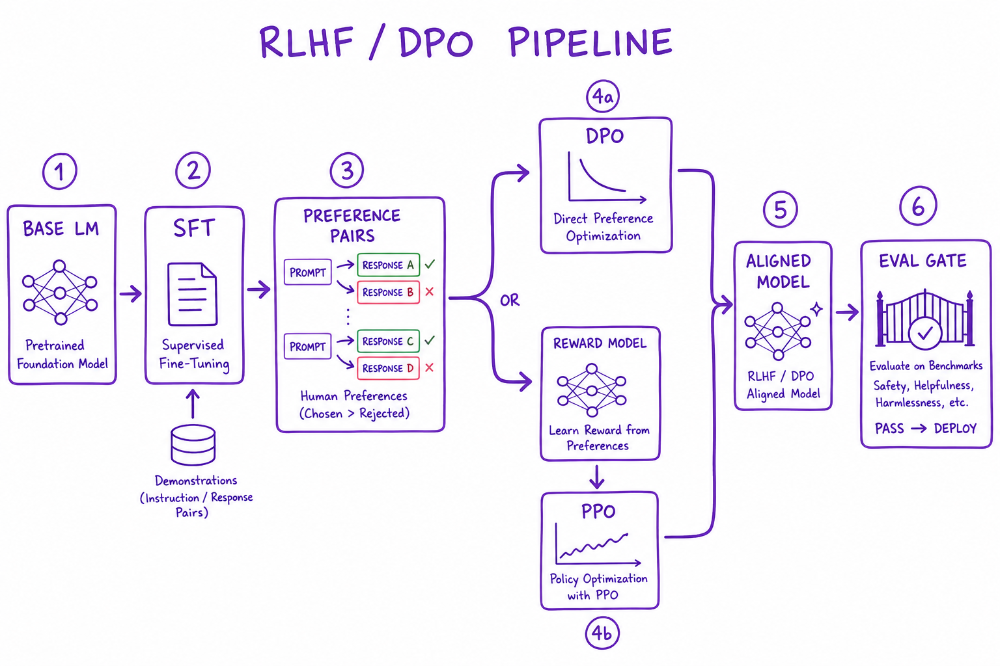
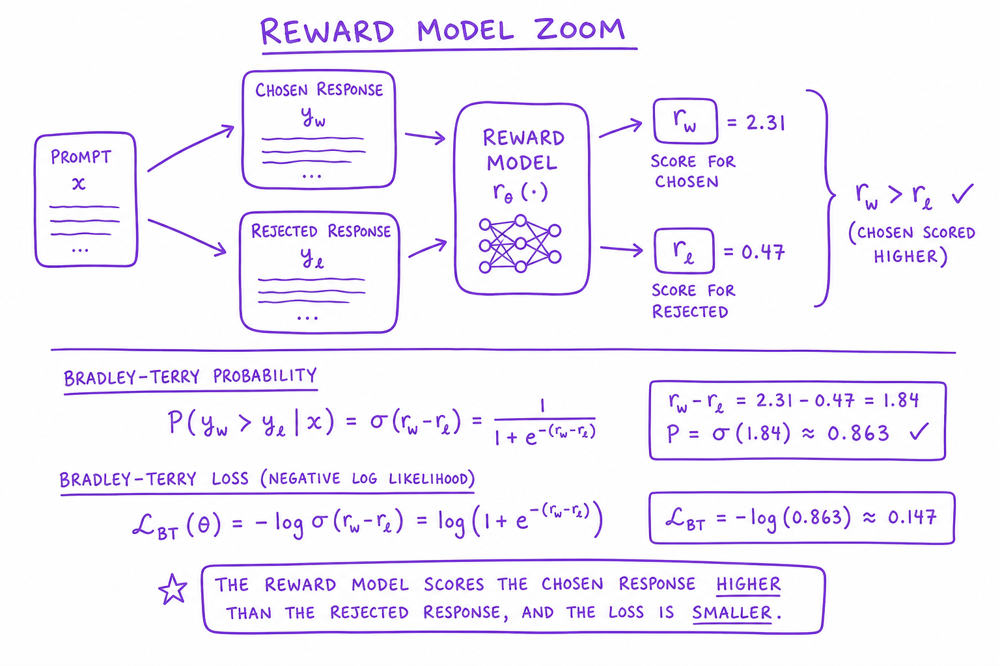
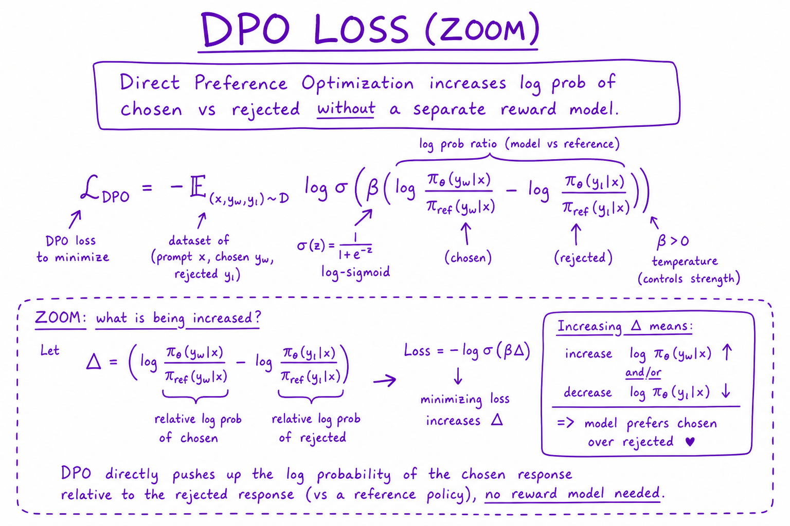

RLHF & DPO Pipeline // Systems
Align LLMs with human preferences: SFT baseline, reward modeling, PPO/RLHF, DPO direct preference optimization. Know when alignment training beats prompt engineering.

Alignment pipeline: base model → SFT on demonstrations → preference pair collection → DPO or RLHF (reward model + PPO) → aligned model → eval harness gate.
01 — What & Why
Base LLMs optimize next-token prediction, not helpfulness or safety. Alignment training steers behavior toward human preferences.
01a — Core Concepts
| Term | Definition | Gotcha |
|---|---|---|
| SFT | Supervised fine-tune on expert demos | Imitates demos not preferences |
| Reward model | Scores response quality | Goodharting — optimize score not intent |
| DPO | Direct preference optimization without RM | Needs quality preference pairs |
| PPO | RL fine-tune against reward model | Unstable, expensive |
01b — API Surface
# Preference dataset format
{"prompt": "...", "chosen": "...", "rejected": "..."}
# TRL DPO
trainer = DPOTrainer(model, ref_model, train_dataset=prefs)
trainer.train()02 — When to Use / When NOT
| Method | Use When | Skip When |
|---|---|---|
| Prompt only | General assistant behavior | Need domain-specific tone at scale |
| DPO/LoRA | Preference data available, moderate shift | No preference labels |
| Full RLHF | Large budget, research-grade alignment | Most product teams — use DPO |
03 — Architecture
Base LM -> SFT -> Collect prefs (A/B human rank) -> DPO train -> Eval gate -> Deploy
04 — Deep Dive: SFT Baseline
10K–100K high-quality (prompt, response) pairs. Must precede DPO. Teaches format and domain vocabulary.
05 — Deep Dive: Reward Model

Reward model scores chosen response higher than rejected; Bradley-Terry loss
Train classifier on preference pairs. Used as PPO reward signal. Monitor reward hacking.
06 — Deep Dive: DPO

DPO loss directly increases log-prob of chosen vs rejected without separate reward model
DPO is default for most teams: simpler than PPO, no reward model, stable on 7B–70B with LoRA.
07 — Deep Dive: PPO / RLHF
PPO fine-tunes policy against RM with KL penalty to base model. OpenAI original InstructGPT path. Expensive and unstable — reserved for frontier labs.
08 — Deep Dive: Alignment Eval
Win-rate vs baseline on held-out prefs. Safety red-team set. Capability eval (don't degrade MMLU). MT-Bench / Arena Elo.
09 — Production & Ops
- Version alignment dataset with model
- A/B aligned vs base in shadow
- Monitor refusal rate and user thumbs
10 — Where It Shows Up
11 — Common Pitfalls
- DPO without SFT baseline
- Preference data from single annotator bias
- Reward hacking / sycophancy
- Alignment tax on reasoning capability